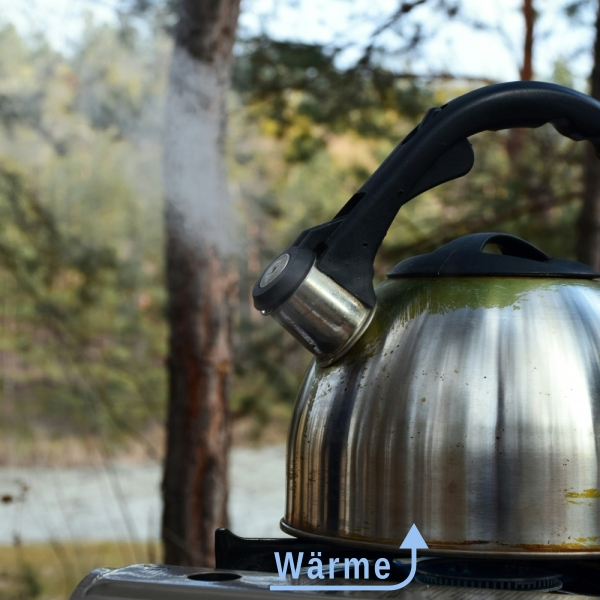
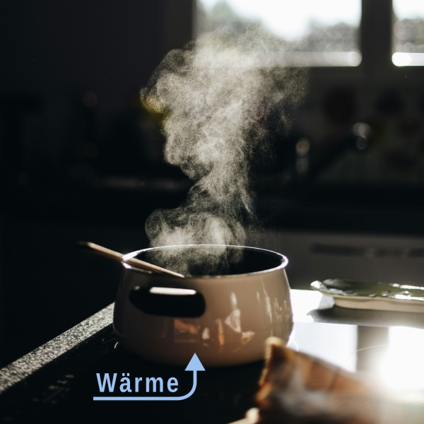

| Stufe | Gesamtpunkte |
|---|---|
| 1 | 76 |
| 2 | 70 |
| 3 | 90 |
\gdef\sub#1{_{\mathrm{#1}}} \gdef\unit#1{\mathrm{#1}} \gdef\celsius{\unit{°C}} \gdef\gram{\unit{g}} \gdef\joule{\unit{J}} \gdef\kelvin{\unit{K}} \gdef\kilogram{\unit{kg}} \gdef\liter{\unit{L}} \gdef\milliliter{\unit{mL}} \gdef\meter{\unit{m}} \gdef\mole{\unit{mol}} \gdef\newton{\unit{N}} \gdef\pascal{\unit{Pa}} \gdef\kilojoule{\unit{k}\joule} \gdef\squaremeter{\meter^2} \gdef\cubicmeter{\meter^3} \gdef\newtonperkilogram{\frac{\newton}{\kilogram}} \gdef\joulepermole{\frac{\joule}{\mole}} \gdef\jouleperkilogram{\frac{\joule}{\kilogram}} \gdef\jouleperkelvin{\frac{\joule}{\kelvin}} \gdef\jouleperkilogramperkelvin{\frac{\joule}{\kilogram\,\kelvin}} \gdef\joulepermoleperkelvin{\frac{\joule}{\mole\,\kelvin}} \gdef\kilojouleperkilogram{\frac{\kilojoule}{\kilogram}} \gdef\kilojouleperkelvin{\frac{\kilojoule}{\kelvin}} \gdef\kilojouleperkilogram{\frac{\kilojoule}{\kilogram}} \gdef\kilojouleperkilogramperkelvin{\frac{\kilojoule}{\kilogram\,\kelvin}} \gdef\kilojoulepermoleperkelvin{\frac{\kilojoule}{\mole\,\kelvin}}
Arbeitsaufträge
Bevor Du loslegst, rufe Dir die Anforderungen für Biologieaufgaben in Stufe 10 ins Gedächtnis. Reiche die Antworten als digitales Dokument ein und verwende eine leserliche Schrift, falls Du ein handgeschriebenes Dokument einreichst. Stufe I ist auf E Niveau, Stufe II ist auf E/A Niveau, Stufe III ist komplett auf A Niveau angesiedelt.
Die Grundpunktanzahl eines Arbeitsauftrages wird durch die Summe der Grundpunkte aller Aufgaben berechnet. Die Grundpunkte kannst Du nicht einsehen, weil sie für Dich bei der Wahl der Aufgaben keine Rolle spielen. Die Grundpunkte sind aber wichtig, weil die Benotungsstufen von ihnen abhängt.
Keine Panik! Die Grundpunkte werden mit den Multiplikatoren 1 für Stufe I, 2 für Stufe II, und 3 für Stufe III, multipliziert. Du bekommst diese Punkte und nicht die Grundpunkte. Du vergleichst diese Punkte mit der Tabelle, um Deine Note einzuschätzen. Das heisst, weil Deine Punkte durch die Multiplikatoren gegangen sind, kannst Du mehr Punkte einfahren, als zum Erreichen einer Notenstufe “Sehr gut” notwendig ist.
In den folgenden Aufgaben wird öfters die Standardenthalpie verwendet. Wie alle thermodynamischen Funktionen, ist auch die Enthalpie von anderen Grössen wie Temperatur, Druck, und andere abhängig und kann sich dadurch verändern. In den engen Grenzen, in denen sich lebende Systeme bewegen, ist es eine annehmbare und gute Näherung, die Enthalpie als konstant zu betrachten.
1 Stufe I
1.1 Änderung der inneren Energie
Wie kann die innere Energie eines Systems grundsätzlich geändert werden? Gib eine Gleichung dafür an und benenne die einzelnen Variablen mit ihren Einheiten.
Du kannst 7 und maximal 7 Aufgabenpunkte bekommen. Punkte werden für Aussagen nur unter Einbeziehung und Beachtung von Fachsprache vergeben
1.2 Änderung der inneren Energie - isoliertes System
Wie kann die innere Energie eines isolierten Systems geändert werden? Drücke das verbal als auch mathematisch aus.
Du kannst 3 und maximal 3 Aufgabenpunkte bekommen. Punkte werden für Aussagen nur unter Einbeziehung und Beachtung von Fachsprache vergeben
1.3 Änderung der inneren Energie- geschlossenes System
Wie kann die innere Energie eines flexiblen und eines starren geschlossenen Systems geändert werden? Drücke dies mathematisch aus.
Du kannst 4 und maximal 4 Aufgabenpunkte bekommen. Punkte werden für Aussagen nur unter Einbeziehung und Beachtung von Fachsprache vergeben
1.4 Teekessel und offener Topf
Beschreibe mit Deinen eigenen Worten, warum der Teekessel anfängt zu pfeifen. Warum passiert das, was das Pfeifen erzeugt nicht beim offenen Topf? Erkläre mithilfe der Thermodynamik und thermodynamischer Begriffe.


Du kannst 6 und maximal 6 Aufgabenpunkte bekommen. Punkte werden für Aussagen nur unter Einbeziehung und Beachtung von Fachsprache vergeben
1.5 Beschreibung der Enthalpie
Was ist die Enthalpie? Beschreibe was sie ist und warum sie eingeführt werden musste?
Du kannst 4 und maximal 4 Aufgabenpunkte bekommen. Punkte werden für Aussagen nur unter Einbeziehung und Beachtung von Fachsprache vergeben
1.6 Allgemeine Änderung der Enthalpie
Gib die Gleichung für die allgemeine Änderung der Enthalpie an. Benenne alle Variablen und gib deren Einheiten an.
Du kannst 7 und maximal 7 Aufgabenpunkte bekommen. Punkte werden für Aussagen nur unter Einbeziehung und Beachtung von Fachsprache vergeben
1.7 Unterschied der Änderung zwischen Enthalpie und innerer Energie
Wie unterscheidet sich die Änderung der Enthalpie von der Änderung der inneren Energie bei konstantem Druck? Erkläre das anhand der Gleichung, die den Unterschied zeigt. Erläutere weiterhin, wann die Verwendung der Enthalpieänderung sich stark von der Änderung der inneren Energie unterscheidet.
Du kannst 5 und maximal 6 Aufgabenpunkte bekommen. Punkte werden für Aussagen nur unter Einbeziehung und Beachtung von Fachsprache vergeben
1.8 Enthalpieänderung bei konstantem Druck
Gib die Gleichung wieder, die die Größe der Enthalpie bei konstantem Druck angibt. Benenne alle Variablen und gib ihre Einheiten an.
Du kannst 6 und maximal 6 Aufgabenpunkte bekommen. Punkte werden für Aussagen nur unter Einbeziehung und Beachtung von Fachsprache vergeben
1.9 Reaktionsarten bei konstantem Druck
Betrachte ein offenes System unter konstantem Druck; also offen zur Atmosphäre. Welche Arten von Enthalpieänderungen sind grundsätzlich möglich? Beschreibe sowohl schriftlich als auch mathematisch die Art der Änderung. Verwende die Tabellenform mit Spaltennamen: Delta H, Reaktionsart, Beschreibung.
Du kannst 7 und maximal 7 Aufgabenpunkte bekommen. Punkte werden für Aussagen nur unter Einbeziehung und Beachtung von Fachsprache vergeben
1.10 Definition der Standardenthalpieänderung
Wie ist die Standardenthalpie definiert?
Du kannst 3 und maximal 5 Aufgabenpunkte bekommen. Punkte werden für Aussagen nur unter Einbeziehung und Beachtung von Fachsprache vergeben
1.11 Auf Masse und Molanzahl bezogene Standardenthalpieänderung
Was ist die spezifische und die molare Standardenthalpieänderung? Wie können beide zur Berechnung der Gesamtenthalpieänderung verwendet werden? Benenne alle Variablen und gib ihre Einheiten an.
Du kannst 6 und maximal 8 Aufgabenpunkte bekommen. Punkte werden für Aussagen nur unter Einbeziehung und Beachtung von Fachsprache vergeben
1.12 Wärmekapazität
Beschreibe wie die Wärmeenergie mit der Wärmekapazität und der Temperaturzunahme zusammenhängt. Gib eine sprachliche als auch ein mathematische Definition an. Bei der mathematischen Definition benennst Du alle Variablen und gibst ihre Einheit an.
Du kannst 8 und maximal 10 Aufgabenpunkte bekommen. Punkte werden für Aussagen nur unter Einbeziehung und Beachtung von Fachsprache vergeben
1.13 Auf Masse und Molanzahl bezogene Wärmekapazität
Was ist die spezifische und die molare Wärmekapazität? Wie können beide zur Berechnung der Gesamtwärmekapazität verwendet werden?
Du kannst 10 und maximal 10 Aufgabenpunkte bekommen. Punkte werden für Aussagen nur unter Einbeziehung und Beachtung von Fachsprache vergeben
2 Stufe II
2.1 Heben einer Masse
Du hebst eine Masse von m = 1\,\kilogram um h = 10\,\meter. Welche Energie brauchst Du, um dies zu bewältigen? Rechne mit der Erdbeschleunigung g = 10\,\newtonperkilogram. Wem geht diese Energie verloren?
Du kannst 10 und maximal 10 Aufgabenpunkte bekommen. Punkte werden für Aussagen nur unter Einbeziehung und Beachtung von Fachsprache vergeben
Ergebnis: -100\,\joule.
2.2 Schmelzen von Wasser I
Du möchtest einen Kilogramm Wassereis bei 25\,\celsius komplett zu flüssigem Wasser schmelzen. Die Standardschmelzenthalpie von Wasser beträgt \Delta H^{\circ}_m = 333.55\;\kilojouleperkilogram
- Welche Enthalpieänderung ist notwendig?
- Welcher Reaktionstyp liegt hier vor? Warum?
- Von wo nach wo fliesst Energie?
Du kannst 12 und maximal 12 Aufgabenpunkte bekommen. Punkte werden für Aussagen nur unter Einbeziehung und Beachtung von Fachsprache vergeben
Ergebnis: a. 333.55\,\kilojoule, b. und c. musst Du selbst herausfinden.
2.3 Schmelzen von Wasser II
Du möchtest zehn Gramm Wassereis bei 25\,\celsius komplett zu flüssigem Wasser schmelzen. Die spezifische Standardschmelzenthalpie von Wasser beträgt \Delta H^{\circ}_m = 333.55\;\kilojouleperkilogram.
- Welche Enthalpieänderung ist notwendig?
- Von wo nach wo fliesst die Energie?
Du kannst 12 und maximal 12 Aufgabenpunkte bekommen. Punkte werden für Aussagen nur unter Einbeziehung und Beachtung von Fachsprache vergeben
Ergebnis: a. 3.33\,\kilojoule; b. Das musst Du selbst herausfinden.
2.4 Verdampfen von Wasser
Du möchtest m = 8\,\gram Wasser bei 25\,\celsius komplett in Dampf überführen. Die spezifische Standardschmelzenthalpie zum Verdampfen von Wasser beträgt \Delta H^{\circ}_m = 2257\;\kilojouleperkilogram
- Welche Enthalpieänderung ist notwendig?
- Welcher Reaktionstyp liegt hier vor? Warum?
- Von wo nach wo fliesst die Energie?
Du kannst 12 und maximal 12 Aufgabenpunkte bekommen. Punkte werden für Aussagen nur unter Einbeziehung und Beachtung von Fachsprache vergeben
Ergebnis: a. 18\,\kilojoule, b. und c. musst Du selbst herausfinden.
2.5 Erwärmen von Wasser
Du möchtest m = 15\,\gram Wasser bei 25\,\celsius um einen Grad erwärmen. Die spezifische Wärmekapazität von Wasser C_{p,m} = 4200\;\jouleperkilogramperkelvin.
- Welche Enthalpieänderung ist notwendig?
- Welcher Reaktionstyp liegt hier vor? Warum?
- Von wo nach wo fliesst die Energie?
Du kannst 12 und maximal 12 Aufgabenpunkte bekommen. Punkte werden für Aussagen nur unter Einbeziehung und Beachtung von Fachsprache vergeben
Ergebnis: a. 63\,\joule, b. und c. musst Du selbst herausfinden.
2.6 Abkühlen von Wasser
Du möchtest m = 9\,\gram Wasser bei 25\,\celsius um einen Grad kühlen. Die spezifische Wärmekapazität von Wasser C_{p,m} = 4200\;\jouleperkilogramperkelvin.
- Welche Enthalpieänderung ist notwendig?
- Welcher Reaktionstyp liegt hier vor? Warum?
- Von wo nach wo fliesst die benötigte Energie?
Du kannst 12 und maximal 12 Aufgabenpunkte bekommen. Punkte werden für Aussagen nur unter Einbeziehung und Beachtung von Fachsprache vergeben
Ergebnis: a. -38\,\joule, b. und c. musst Du selbst herausfinden.
3 Stufe III
3.1 Zuckerverbrennung
Bei einer Verbrennung von Glucose unter freiem Himmel und bei konstantem Druck p = 101325\;\pascal entsteht ein Liter 1\,\liter des Gases \ce{CO2}. Du brauchst hier, keine Antwortsätze aufzuschreiben aber achte auf die Einheiten!
- Was ist dabei der Unterschied zwischen der Abnahme der Enthalpie und der inneren Energie?
- Vergleiche das mit der dabei enstandenen Enthalpieänderung von \Delta H \approx -21\,\kilojoule; zum Beispiel als Prozentwert.
- Welcher Reaktionstyp liegt hier vor? Warum?
- Wo geht die Differenz dieser beiden Energien hin?
- Berechne wie die Änderung der inneren Energie gewesen sein muss, damit dieser Unterschied herauskommt?
Du kannst 33 und maximal 33 Aufgabenpunkte bekommen. Punkte werden für Aussagen nur unter Einbeziehung und Beachtung von Fachsprache vergeben
Ergebnis: a. 101\,\kilojoule, b. 0.5\,\%, c. und d. musst Du herausfinden.
3.2 Geschlossen und offen
Du erwärmst m = 23\,\gram Wasser auf eine Endtemperatur T\sub{Ende} = 343\,\kelvin in einem starren geschlossenem System. Die aufgewendete Energie ist Q = 4347\,\joule. Die spezifische Wärmekapazität von Wasser ist C_{p,m} = 4200\,\jouleperkilogramperkelvin. Du brauchst hierbei, keine Antwortsätze aufzuführen.
- Was war die ursprüngliche Temperatur des Wassers?
- Was ist die Änderung der inneren Energie?
- Was ist die Änderung der Enthalpie?
- Welcher Reaktionstyp liegt hier vor? Warum?
- Woher kommt die benötigte Energie?
- Wieviel Wasser würde verdampfen, wenn die aufgewendete Energie komplett in die Verdunstung kanalisiert werden könnte? Die spezifische Standardenthalpie der Verdampfung liegt bei \Delta H^{\circ}_{\mathrm{vap},m} = 2257\,\kilojouleperkilogram.
- Angenommen Du wiederholst das Experiment in einem offenen Gefäss unter Atmosphärendruck p = 101325\,\pascal. Du erwärmst das Wasser aber findest heraus, dass etwa 1.0\,\gram Wasser am Ende verdunstet sind. Der Wasserdampf nimmt am Ende ein Volumen von V\sub{Ende} = 1.7\,\liter ein. Berechne die Änderung der Enthalpie und der inneren Energie in diesem neuen Szenario.
Du kannst 57 und maximal 57 Aufgabenpunkte bekommen. Punkte werden für Aussagen nur unter Einbeziehung und Beachtung von Fachsprache vergeben
Ergebnis: a. 298\,\kelvin, b., c., d., e. musst Du selbst herausfinden, f. 2\,\gram, g. \Delta H = 4160\,\joule, \Delta U = 6242\,\joule.
Punkte
Die mögliche Gesamtpunktanzahl ohne Stufenmultiplikatoren ist 141. Für die Benotung ist nur diese entscheidend.
Gesamtpunkte pro Stufe
Mit Multiplikatoren ergeben sich für die unterschiedlichen Anforderungsstufen folgende maximale Punktanzahlen:
Zusammen ergibt das 236. Aufgaben aus Stufe III bringen durch den Multiplikator mehr Punkte aber sind anspruchsvoller. Löst Du nur Aufgaben aus Stufe I und II, so musst Du mehr lösen aber dafür sind die Aufgaben leichter. Setze nicht immer alles auf eine Karte; mische die unterschiedlichen Stufen.
Punkte pro Aufgabe
Die Punkte pro Aufgabe entnimmst Dun der folgenden Tabelle:
| Aufgabe | Punkte | Maximale Punkte |
|---|---|---|
| Stufe 1 | ||
| Änderung der inneren Energie | 7 | 7 |
| Änderung der inneren Energie - isoliertes System | 3 | 3 |
| Änderung der inneren Energie- geschlossenes System | 4 | 4 |
| Teekessel und offener Topf | 6 | 6 |
| Beschreibung der Enthalpie | 4 | 4 |
| Allgemeine Änderung der Enthalpie | 7 | 7 |
| Unterschied der Änderung zwischen Enthalpie und innerer Energie | 5 | 6 |
| Enthalpieänderung bei konstantem Druck | 6 | 6 |
| Reaktionsarten bei konstantem Druck | 7 | 7 |
| Definition der Standardenthalpieänderung | 3 | 5 |
| Auf Masse und Molanzahl bezogene Standardenthalpieänderung | 6 | 8 |
| Wärmekapazität | 8 | 10 |
| Auf Masse und Molanzahl bezogene Wärmekapazität | 10 | 10 |
| Stufe 2 | ||
| Heben einer Masse | 10 | 10 |
| Schmelzen von Wasser I | 12 | 12 |
| Schmelzen von Wasser II | 12 | 12 |
| Verdampfen von Wasser | 12 | 12 |
| Erwärmen von Wasser | 12 | 12 |
| Abkühlen von Wasser | 12 | 12 |
| Stufe 3 | ||
| Zuckerverbrennung | 33 | 33 |
| Geschlossen und offen | 57 | 57 |
Benotung nach Punkten
Die genaue Verteilung der Prozent- und Punktbereiche mit den dazugehörigen Noten entnimmst Du der folgenden Tabelle.
| Prozentbereich, % | Punktebereich | Notenpunkte |
|---|---|---|
| Sehr gut | ||
| 97 bis 100 | 137 bis 141 | 15 |
| 93 bis 96 | 131 bis 136 | 14 |
| 90 bis 92 | 127 bis 130 | 13 |
| Gut | ||
| 85 bis 89 | 120 bis 126 | 12 |
| 80 bis 84 | 113 bis 119 | 11 |
| 75 bis 79 | 106 bis 112 | 10 |
| Befriedigend | ||
| 70 bis 74 | 99 bis 105 | 9 |
| 65 bis 69 | 92 bis 98 | 8 |
| 60 bis 64 | 85 bis 91 | 7 |
| Ausreichend | ||
| 55 bis 59 | 78 bis 84 | 6 |
| 50 bis 54 | 70 bis 77 | 5 |
| 45 bis 49 | 63 bis 70 | 4 |
| Mangelhaft | ||
| 38 bis 44 | 54 bis 63 | 3 |
| 32 bis 37 | 45 bis 53 | 2 |
| 25 bis 31 | 35 bis 44 | 1 |
| Ungenügend | ||
| 0 bis 25 | 0 bis 36 | 0 |